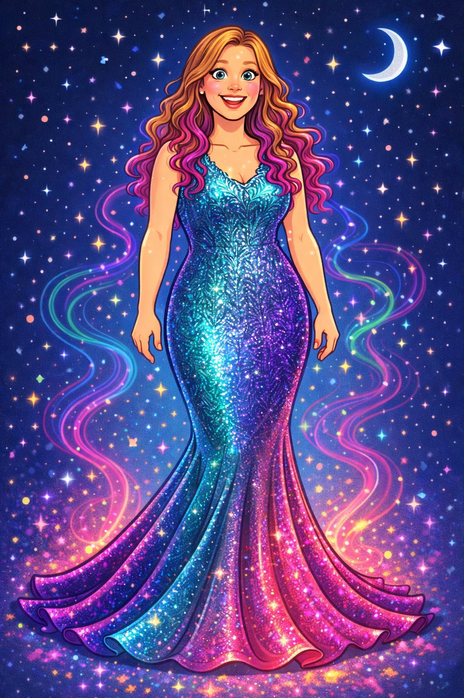

AI for Advocacy • Amplifying Educator Voices
Karrie De Torres • Educator • Organizer • Advocate
Enter the Advocacy PortalThis site collects tools, prompts, and real examples showing how artificial intelligence can support educator advocacy, organizing, and member communication.
These resources were developed for educator trainings focused on responsible and practical uses of AI for organizing, policy communication, and collective action.